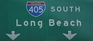

FOR IMMEDIATE RELEASE
Press Contact:
Lost Moon Radio Brings You The Only Song That Will Keep You Sane When the 405 Closes!
LOS ANGELES, July 11, 2011 –
LOST MOON RADIO, a group of LA-based comedians and musicians, releases a new single and music video perfectly timed to keep drivers sane while they’re stuck in traffic during the July 15th-17th 405 closure. In honor of “Carmaggedon,” the comedy group presents “The 405” a ballad in the style of Springsteen had he been born an Angeleno. Head to lostmoonradio.com/405 to check out the video and download the free audio track. It’s the last chance to celebrate the big congested artery that is the 405 before it's reborn into an even bigger congested artery.
Recently named LA Weekly’s “Best of the Hollywood Fringe,” LOST MOON RADIO is a group of writers, performers, artists, and musicians who create dry comedy and wet rock ‘n roll through live performances, videos, audio tracks, and general tomfoolery. Critics describe LOST MOON RADIO as “The Groundlings but with a better batting average...Lost Moon Radio shows the potential to be the live radio show for the new millennium generation” and “Off the charts. A show like SNL should just scoop up the entire cast of Lost Moon Radio. It would be a hundred times better." For more information on LOST MOON RADIO head to www.lostmoonradio.com.

“The 405” was composed by Dylan Ris, with lyrics by Dylan Ris, Frank Smith, and Ryan Harrison; recorded and engineered by Dave McKeever; featuring Dan Oster on vocals, Dylan Ris on guitar, Rich Ramberg on saxophone and organ, Michael Wells on piano, Jasmin Guevara on drums and Brenton Kossak on bass. The video for “The 405” was directed by Ryan Harrison, shot and edited by Dave McKeever and stars Dan Oster, Martha Marion, Dylan Ris, Rich Ramberg, Michael Wells, Jasmin Guevara, Brenton Kossak and the various beleaguered Angelenos on the 405. “The 405” was originally performed in “LOST MOON RADIO: EPISODE 10” at the 2011 Hollywood Fringe Festival.
# # # END # # #